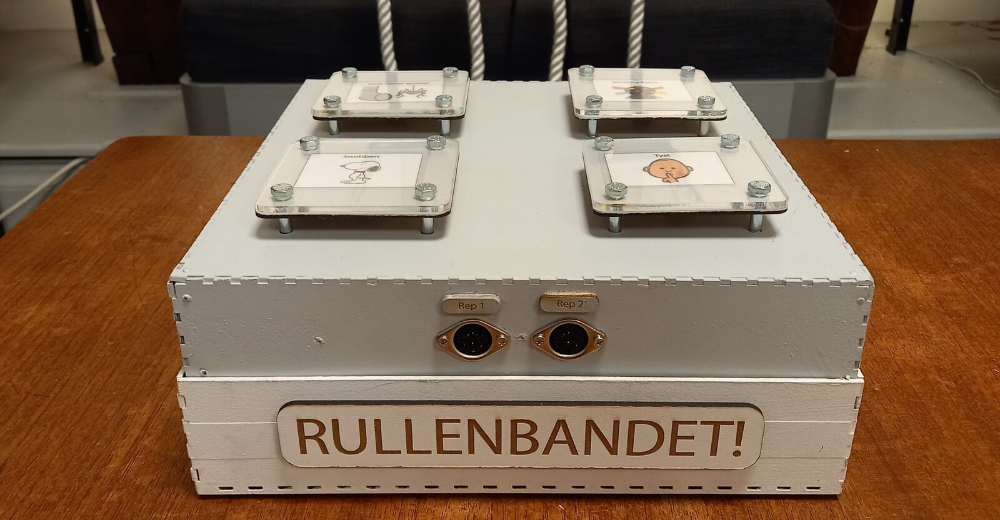
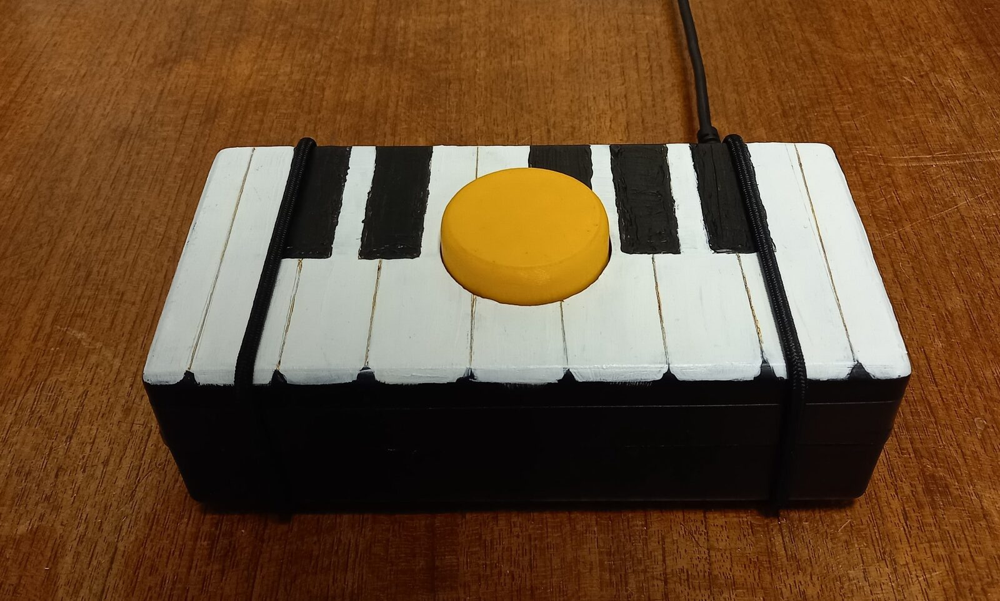
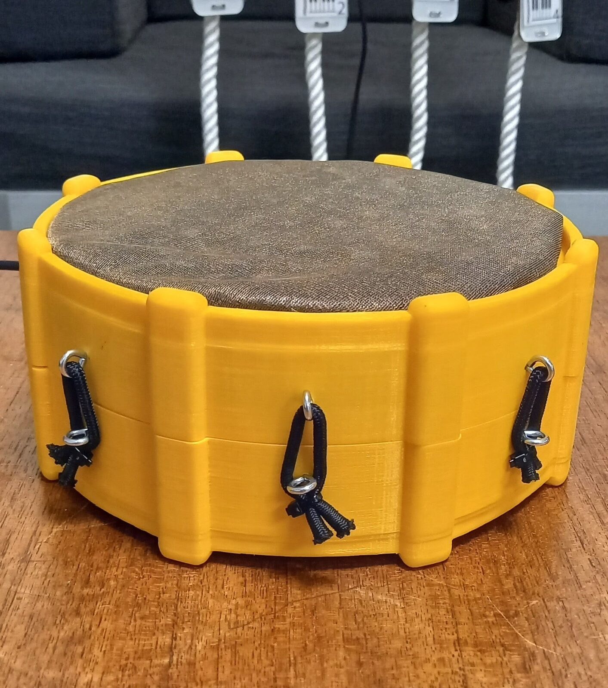
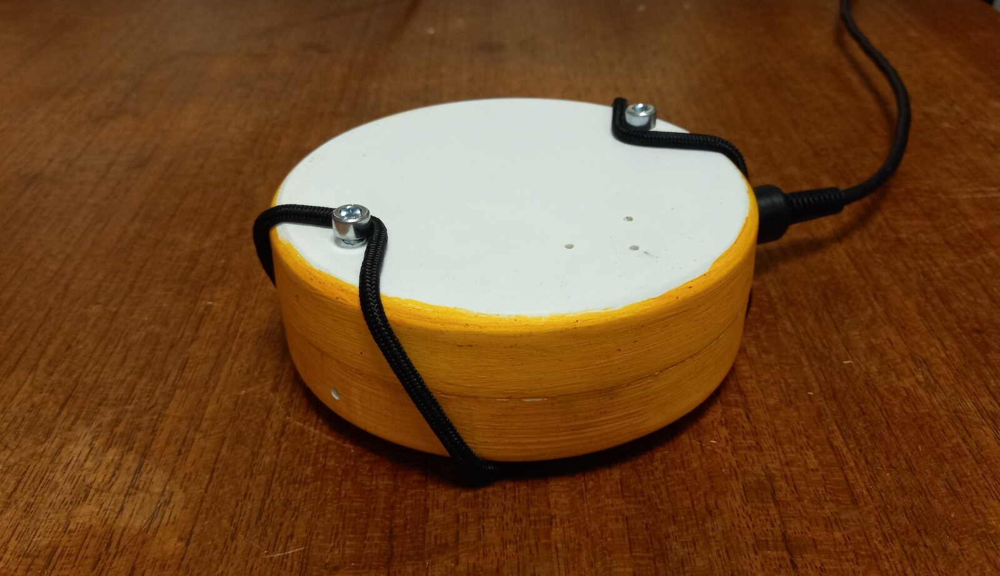
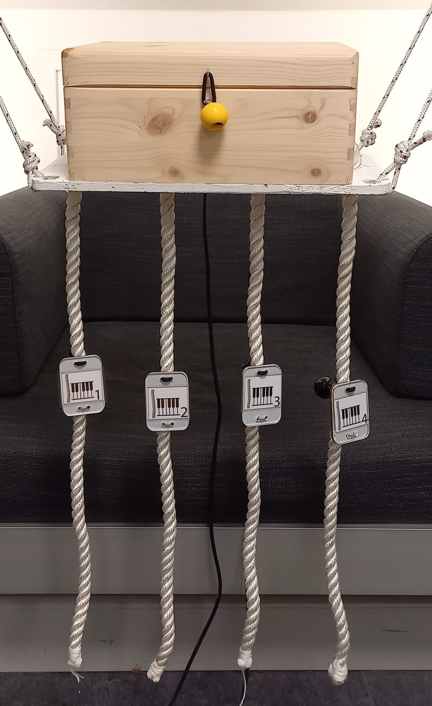
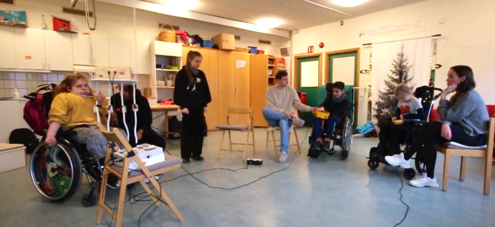

The Rullen Band
ABSTRACT
Music education is an important part of the school curriculum; it teaches children to be creative and to collaborate with others. Music gives individuals another medium to communicate through, which is especially important for individuals with cognitive or physical disabilities. Teachers of children with severe disabilities have expressed a lack of musical instruments adapted for these children, which leads to an incomplete music education for this group. This study aims at designing and evaluating a set of collaborative musical instruments for children with cognitive and physical disabilities, and the research is done together with the special education school Rullen in Stockholm, Sweden. The process was divided into three main parts; a pre-study, building and designing, and finally a user study. Based on findings from previous research, together with input received from teachers at Rullen during the pre-study, the resulting design consists of four musical instruments that are connected to a central hub. The results show that the instruments functioned as intended and that the design makes musical learning accessible in a way traditional instruments do not, as well as creates a good basis for a collaborative musical experience. However, fully evaluating the effect of playing together requires more time for the children to get comfortable with the instruments and also for the experiment leaders to test different setups to optimize the conditions for a good interplay.
Author Keywords
Accessible musical instruments; togetherness; accessible sound design; HCI; music education; special education; children with disabilities; new interfaces for musical expression
CCS Concepts
•Sensor programming → Sound and music computing; inclusive design; •Interfaces for musical expression for people with special needs
INTRODUCTION
A fundamental part of music education in school is learning to create music yourself and to play together with other people. It is not only a creative outlet, but also a possibility to express yourself beyond words and a way to learn how to communicate and socialize with others[1][2]. This might be especially important for children who have cognitive and/or physical disabilities, as they are often limited in their abilities to communicate using traditional methods. However, the musical instruments that are used in today’s music education are usually not adapted for children with disabilities, and therefore do not provide equal opportunities to create music.
This research project is done in collaboration with the special education school Rullen1 located in Stockholm. Rullen is a school for children with profound cognitive disabilities between the ages of 6-19. The children are mostly non-verbal and have, in various degrees, limited control over their movements. Currently, the school's music education is limited and provides few interactive elements for the children to engage with and learn from. A music lecture might consist of writing song lyrics with PODD (Pragmatic Organisation Dynamic Display) [3], which is an alternative augmentative communication method used at the school, or practising dance and listening to music from different cultures. However, it does not provide any sufficient way for the children to play music themselves, and especially not together.
The purpose of the project was to design and evaluate a set of collaborative musical instruments aimed at children with cognitive and physical disabilities, focusing on the physical design of each of the instruments but also on how they contribute to a feeling of togetherness during play. To evaluate the designs, a user study was conducted with the children at Rullen. The results of this study give insight into how interactive musical collaboration can be implemented in special education.
Ethical considerations
Having consent is of high importance when working with children. All parents of the children that participated in the study have signed a consent form, however, the children themselves should also consent to participate. This is difficult to ensure when it is unclear on what level the children can communicate whether they want to participate or not. Thus, the test examiners were dependent on the assistants communicating if they interpret that any of the participants felt discomfort during the study.
BACKGROUND
Importance of collaborative work in special education
One of the most important parts of children's development is to learn how to communicate and collaborate with others, skills that can be acquired and developed through group work in school. Moreover, working in groups can help children become better at helping each other and using a more inclusive language[2]. When looking specifically at special education, collaborative work has also proven to result in less disruptive and aggressive behaviour among children, in higher education performance and in improving the child's ability to make friends. It can also improve the learning environment for the teachers.[1]
Designing tools for children
When designing for children, there are certain aspects one should take into consideration when making design choices. The development of children’s motor skills and strength varies, and it is important to adapt the size and weight of tools so that the child can feel in control of the object. At the same time, children might not always act with care or use the tool as intended and therefore objects need to be robust so that they do not break in a way that could be harmful [4].
Moreover, making tools colourful is important as this makes the tool more inviting and invokes interest. Colour also adds another stimulus to the tool, which enforces children's cognitive development [5]. When designing for children with visual impairments, certain colour schemes are better suited than others. Warm, bright and vibrant colours such as red, yellow and orange are preferred to create visible objects [6]. For a higher task engagement level, it is also beneficial with congruence between visual and sonic information [7]. At the same time incongruence, up to a certain level, can stimulate curiosity and creativity [8].
Mapping of input to output
Research has shown that having a direct and intuitive mapping between the user input and the system output is a crucial factor when designing musical instruments for people with cognitive disabilities. Creating a design that has a clear and responsive mapping of the input to output will make it easier for the user to understand how the design works and what their interaction with the design will result in. In the case of musical instruments, this means that the user will gain a better understanding of how to adapt and control the sound, which will allow the user to more accurately and freely express themselves and their creativeness. [9]
Previous research regarding accessible musical instruments
In [10], several previous studies focused on inclusive music-making and accessible Digital Musical Instruments were reviewed. Many of these studies have children as their target group, however, most of the instruments are designed to be played by a single user and not together as a band. There are also a few commercially available instruments for children with disabilities, such as Skoogmusic’s Skoog and Skwitch2, the Clarion3, and the Jamboxx4. However, none of these support the users in playing music together by for example helping the user to play the right notes and in sync with the others.
METHOD
Design process
The design process of The Rullen Band followed the practice of Universal Design [11], as the core motivation for the project was to create a set of instruments that can be used by anyone without the need for adjustments. One of the most important principles of Universal Design is tolerance for error. As the users have varying physical abilities, it is important that a mistake or involuntary action does not disturb the overall experience for other users. This is partly achieved by having the instruments independent from each other, but also by each instrument having a delay of quieting the sound when the user stops interacting with the instrument, making sure involuntary movements will not interrupt the playing. Moreover, as the PODD language was to be used during the user testing, it was important to adopt the guidelines of the PODD language when making design decisions as it has certain rules for how it should and should not be used.
Design choice interview
Before the design of the instruments began, an interview was conducted with the teachers at Rullen for the sake of collecting information on what the teachers believe would be a suitable design. The teachers recommended using a grey-white colour for parts of the instruments where there is supposed to be no interaction and bright colours, such as yellow, on interaction parts. In regards to the music, they believed having at least one famous children’s song and another with rhythmic music that makes you want to dance and move to be suitable. They also said that it would be preferable to use pictures from the PODD language together with the instruments, to make the interactions more clear. In addition to learning about the children from the teachers, one of the researchers of this study has extensive (≈10 years) working experience from Rullen and has known most of the study participants for about 2-5 years. This experience was also used for many of the instrument design choices and when designing the user study.
Software
The Rullen Band was programmed in PureData and C++. The PureData code connects all instruments to play in sync and adds the possibility to change track and adjust the volume. C++ is used to communicate with an MPR121 capacitive touch sensor.
The hub
The hub (Figure 1) is a 26x26x10 cm wooden box with four large buttons and a potentiometer. The hub is constructed with extra weight to provide stability. The buttons are mapped to change the output to the three different songs or silence, and the potentiometer adjusts the volume of all instruments together. Inside the hub, everything is connected to a Bela board with an audio expander cape5. The hub connects each instruments’ audio and control signals with 5-pin midi cables. The hub is coloured with the same light grey colour as the background of the PODD language book and it is possible to change the pictures on the buttons if songs are changed.


Figure 1. The hub. The four buttons to change the song or mute all instruments, as well as the midi connections to the rope synthesizer are visible in the figure.
Piano
The piano (Figure 2) consists of a 3D-printed 20x10x6 cm hollow rectangular box with a large yellow button on top of it. The box is 3D-printed in black and then painted to look like a piano. A momentary button connected to the Bela board is mounted underneath the yellow button.


Figure 2. The piano, featuring a single yellow button for interaction.
Drum
The drum (Figure 3) is a bright, yellow 3D-printed 20x20x8 cm cylinder. The drum membrane consists of two layers of conductive textile, of which one is provided with 3.3 V and the other is mapped to the Bela board input. Between the layers is a sheet of cotton fabric with holes cut in it. When the top conductive layer is pressed down, it touches the bottom conductive layer through the holes, the circuit is closed and the Bela can register input.


Figure 3. The drum is played by touching the conductive membrane on top.
Tambourine
The tambourine (Figure 4) is a yellow and white 3D printed 12x12x4 cm cylinder. It is constructed to be lightweight. Two tilt sensors are mounted on the inside with a 90-degree angle from each other, to register tilt in different directions.


Figure 4. The tambourine makes sounds when it is tilted in any direction.
Rope synthesizer
The rope synthesizer (Figure 5) consists of a 29x19x14 cm wooden box with four thick 63 cm long ropes hanging down from it. There is conductive thread sewn around the ropes that connect to individual inputs on an MPR121 capacitive touch sensor. The sensor sends registered touch input from the individual ropes to the I2C bus on the Bela board, which is mounted inside the wooden box. The instrument is hung up in thinner adjustable ropes, letting the playable ropes hang down freely. It can thus be adjusted to fit users of different heights or depending on if they are sitting, standing or lying down when playing.


Figure 5. The rope synthesizer is played by touching or holding the ropes.
Sound design
To create a direct and intuitive mapping of the user's interaction and the sound output, each instrument has its own speaker. Three songs were implemented based on the recommendations made by teachers at Rullen, who considered the broad age group and musical preferences among the children at the school. These songs were: Itsy Bitsy Spider (children's song), The Peanuts Theme Song (cartoon theme song), and Blinding Lights (a modern up-tempo pop song by The Weeknd).
User study
A user study was conducted at Rullen on the 6th of January 2021. Each participant had an assistant with them during the study. Two researchers conducted the test session: one (the student assistant at Rullen) actively giving instructions to the assistants and the children, and one positioned in the background, in charge of timing and video recording. The instructions to the children were communicated using the PODD language. All participants performed the same test.


Figure 6. Study setup, showing participants playing beside their assistants
Each participant got to try each instrument for two minutes with an assistant by their side (see Figure 6) assisting when needed. The song used for the testing was Blinding Lights. The two-minute time limit was chosen for the children to be able to concentrate throughout testing all four instruments. After two minutes the instruments rotated and each participant got a new one to try. The participants all played at the same time as The Rullen Band is intended to be a collaborative experience. The test took approximately 10 minutes. The assistants had been informed by the test examiners on how to assist the participants during the test.
RESULTS
The results will explain how the participants interacted with the instruments during the user study. Six children (8-18 years old) participated in the study. There were two different test groups, one with four participants (referred to as P1-4) and one with two (P5 and P6). All interactions described in the following sections are shown in Table 1.
Participant | Piano | Drum | Tambourine | Rope synthesizer |
P1 | Played on button | Played by putting hand on top repeatedly | Assistant limited interaction. User banged on the instrument | Played one and several ropes |
P2 | Pushed away | Tried briefly, then pushed away | Pushed away | Played one and several ropes |
P3 | Explored with hands/occasionally played | Explored with hands/occasionally played | Explored with hands/occasionally played | Explored with hands/occasionally played |
P4 | Did not want to participate | Did not want to participate | Did not want to participate | Did not want to participate |
P5 | Pushed away/Sought comfort | Pushed away/Sought comfort | Pushed away/Sought comfort | Pushed away/Sought comfort |
P6 | Tried to play, pressed the button too lightly | Played briefly repeated times | Held for few seconds, explored with hands and mouth | Explored with hands and mouth/occasionally played |
Interacting with the instruments
Each instrument has a different interaction modality and design to ensure that all users will be able to play at least one of the instruments. The drum is mainly played by touching the top surface with your hand or any other part of your body. The start and stop signal is slightly delayed so it also works if you play it by banging it like a regular drum. The tambourine starts playing when you tilt it in any direction, so you can either play it by just holding it in your hand or shaking it like a regular tambourine. The ropes are played through touching or holding them, one or several at a time. The piano is played by pushing a button on top.
Piano
P1 played the piano by hitting the button regularly throughout the whole test. P2 did not approach the piano voluntarily, and when the assistant helped to put P2’s hand on the piano, they pushed it away. P3 explored the piano intensively with their hands, especially the elastic strings holding it together. They did not play the piano on the intended button. P6 tried several times to play the piano on its button but did not press hard enough to make it play, and eventually gave up. P4 and P5 did not want to play at all. P5 sought physical comfort from the assistant.
Drum
P1 played the drum as intended after getting instructions from the assistant. They played the drum both by holding their hand on it and hitting it. P2 held the drum for a couple of seconds, then pushed it away and did not want to approach it again. P3 explored the drum with their hands, especially the edges and parts that stood out. The drum occasionally made sounds. P6 reached for the drum but when it started to sound, they pushed it away. When left alone with the instrument for a moment, they started to approach the drum again and played it as intended for a short time and then pushed it away again. P4 and P5s did not want to approach the instruments at all, P5 repeatedly sought comfort from the assistant.
Tambourine
For P1, the assistant hindered them from holding the tambourine themselves, allowing them to only play it by banging on it. P3 held the tambourine with one or two hands, looked at it from different angles, twisted and turned and explored it with their hands. P6 did not seem to be comfortable with gripping objects for more than a couple of seconds, repeatedly handing the tambourine to the assistant or throwing it away after exploring it with their hands and mouth. P2 and P5 just pushed the instrument away and P5 repeatedly sought comfort from the assistant. P4 did not want to participate to any extent.
Rope synthesizer
P1 and P2 played the ropes as intended. They played several ropes at the same time, but also one by one. After a while, they started to explore the other parts of the instrument with their hands, especially the box on top. P3 was mostly interested in fiddling with the drawstrings attached to the ropes, and the colourful plastic balls hanging from different locking devices. P6 explored the ropes with their hands and mouth, and the ropes occasionally sounded as intended. P4 and P5 did not want to play at all, and P5 repeatedly sought comfort from the assistant.
Playing together
When observing the children using the instruments in the study, the main focus for the participants appeared to be to explore and try the different instruments. It did not emerge clearly whether the participants experienced a feeling of togetherness or not, however, none of the participants seemed to be disturbed by the other participants.
DISCUSSION
Conclusions regarding design from the user study
The test showed that some participants liked to fiddle and tinker with the instruments, particularly P3. P3 twisted and turned on the instruments and felt on every edge, which made especially the tambourine function as intended. However, this thorough tinkering also led to P3 being able to open the piano after playing with the elastic ropes holding it together. When playing with the rope synthesizer, P3 found the yellow ball attached to the elastic rope that held the box filled with technical equipment closed and proceeded to open it before repeatedly being stopped by the assistant. The ropes were nowhere near as interesting as the colourful plastic balls and the box. This exploration with the rope synthesizer was shown with several participants. P2 also started to grasp the thinner mounting ropes as if they would make a sound as well, which is understandable since they have the same colour and texture as the playing ropes.
The participants' desire to fiddle and tinker with the rope synthesizer reveals a lot. First off, the instrument should have been hung higher up so the ropes were in eyesight level instead of the wooden box. Secondly, having the drawstrings colourful - which were not intended for interaction - while having the ropes white - which were intended for interaction - was a design mistake that is inconsistent with the rest of the band. In the final design, everything that the user can see, reach and touch should be an interactable part of the instrument, for example, the drawstrings. Tinkering and fiddling should be encouraged since it practices fine motor skills [12].
The user study showed that some instruments worked well with some participants, and less well with others. It was noticeable how P6 interacted with the drum as opposed to the piano. With the drum, P6 was able to lay their hand on the membrane and listen for a while before indicating they were done. The fine motor skills required for the piano however led to P6 not being able to fully push down the button to make a sound. When getting help to push it down with assistance P6 showed interest, but when trying by themself directly afterwards, the fine motor skill required seemed to lead to frustration and P6 proceeded to push the instrument away.
This shows a great benefit of The Rullen Band - children should be able to choose an instrument that is of the right level of difficulty according to their specific needs. It is also important to remember that playing an instrument requires practice. Some participants managed to learn some interactions during the short time they got to test the instruments, but some will need far more time before even feeling comfortable with using a new device and listening to a new sound. Curiosity could be seen as the urge to know more [13], however, if the novelty of the instruments causes stress or fear in the children rather than curiosity, this could explain some of the children’s limited play with the instruments.
The value of recognition and creating a feeling of togetherness
At the end of the user study, P5 that had been most sceptical to try the instruments came forward as the other children were leaving. One of the assistants then mentioned that the song Itsy Bitsy Spider was available, which caught P5’s interest in a completely different way than anything had done during the test, when Blinding Lights was used. During the test, P5 kept pushing the instruments away and sought comfort from the assistant through hugs. This shows the importance of recognition, and that unknown situations can create insecurity. An advantage when using The Rullen Band could therefore be to practice on the same song for a long time to give the children time to get comfortable with the sounds, making room for concentrating on learning how to play the instrument. Another idea could be to listen to the recorded song outside of playing with the band to create comfort and recognition. This is an alternative or complementary method to what has been explored in therapeutic contexts, where the therapist lets the individual choose songs they find pleasant and comforting through music streaming platforms before using them in musical therapy of various types [14]. That is a sound design approach that could be implemented on The Rullen Band if it is known to whom the set of instruments is for.
The goal of using The Rullen Band is to create a feeling of playing in a band together with others. Since this was the first time for the children to play these instruments, the main focus for the participants was to explore and try the different instruments, which occupied much of their attention. What could be concluded was that The Rullen Band creates a very good basis for this feeling to further develop, since different instruments suited different participants and almost everyone that participated found some instrument that they liked and could manage based on their conditions. Just like all other bands, it takes practice to get a good interplay and be comfortable enough with your instrument to be able to listen to and collaborate with others. This will most likely develop over time when the recognition steps in and the children feel comfortable with playing.
Study setting with non-verbal communicators
Several factors might have affected the test, such as the test setting or the mood among the participants. Regarding the test setting, it was desirable to keep it as familiar as possible to the participants. For this study, this meant having the test in their regular school premises with their usual assistants to avoid the participants feeling uncomfortable. However, one of the test examiners was unknown to the participants. Moreover, the presence of a camera might have caused scepticism to the situation and resulted in less curiosity to try the instruments. This was particularly noticeable for P6. Except for scepticism, impatience was expressed by some participants, particularly P2. This might have been partly caused by a delay at the beginning of the test due to one of the participants being late. When the instruments then were to be tested, the patience was already running low and gaining interest in the instrument was initially difficult. When learning the instruments it might thus be more reasonable to try one instrument at a time, with a familiar song, with fewer children and no unknown people present.
It is important to remember that these feelings are completely valid, and being able to communicate, for example, scepticism to a situation indicates an awareness of the surroundings. It is also beneficial for the sake of this study, as interpretation of non-verbal communicators is a challenge in studies of this kind. How can one validate the observations when the participants themselves cannot express their experience or emotions? An advantage of this study was that one of the test examiners had been working with these children for a long time. It was also beneficial that several of their regular assistants were present to help interpret the participants' expressions during the study, as they know the children very well. So not only could the instruments be evaluated in terms of how the participants interacted with them physically, but being familiar with the children made it possible to further understand their expressions and emotions during the testing, and whether a seemingly unsuccessful session should be explained by the instrument design or by other variables.
The assistant’s role
When assisting people with cognitive disabilities, the assistant needs to interact emotionally with the user to understand their needs, which creates difficulties[15]. The varying level of engagement, experience and expertise will greatly influence which level of user involvement that is possible to achieve. Previous studies have therefore expressed a need to design for individuality and practicality in musical interfaces for children with disabilities, to make the interaction less dependent on assistance, and more functional in a real-world setting [16]. However, all children at Rullen need assistance with most daily life activities, and designing instruments for complete independence might not be a reasonable solution. Designing for each individual’s needs might also not be a possibility due to monetary constraints. Instead, the presented results indicate that the assistant’s role should not always be scaffolded away in a school-like setting. In line with previous research [17][18], interdependence might in some situations be more desirable than independence. The assistant should understand both the interaction with the musical interface and the child’s special needs to correctly engage the child in the musical interaction, despite physical or cognitive barriers. The role of the designer is thus to develop interfaces easy enough for the assistant to learn and seamlessly communicate to the user, while still being complex enough to be stimulating for the user over time.
Future studies
The findings of this study showed that in order to evaluate how well the instruments create a collaborative musical experience, a longer user study is needed. During the writing of this paper, new experiments were initiated where three groups of 3-4 children from Rullen play the instruments together for about 15 minutes once a week for four months to collect material for further analysis of what abilities are developed when using the instruments repeatedly over a longer time.
Moreover, the assistant’s role in the user study should also be examined further. Observations made during this user study indicated that the assistants gave the children somewhat different conditions to interact with the instruments. Future research could thus examine how the assistants should be instructed in order to create equal opportunities for the children to interact with the instruments.
CONCLUSION
In this project, a set of instruments was designed and evaluated for children with profound cognitive disabilities and various degrees of limited motor skills. The results showed that the instruments functioned as intended, as a majority of the participants played at least one of the instruments, and that the design makes musical learning accessible in a way traditional instruments do not. Moreover, findings also reaffirm the importance of having a consistent design so that the interaction becomes intuitive. Fully evaluating the effect of playing together among the participants could not be done during this study, as it requires more time for the children to get comfortable with the instruments and also for the experiment leaders to test different setups to optimize the conditions for a good interplay. However, it would be fair to assume that during a long term study, the feeling of togetherness will appear and reveal the benefits of musical interplay among children with profound cognitive disabilities. This paper also discussed design choices made to make music a stimulating learning experience, as well as the importance of correct assistance and the challenges of implementing scientific studies with non-verbal communicators.
Compliance with Ethical Standards
This research had no external funding. The guardians of all participants have signed written consent of the participation, since the participants are unable to do so themselves.
Footnotes
Citations
- ↩García-Carrión, R., Molina Roldán, S., & Roca Campos, E. (2018). Interactive Learning Environments for the Educational Improvement of Students With Disabilities in Special Schools. Frontiers in Psychology, 9. https://doi.org/10.3389/fpsyg.2018.01744
- ↩Gillies, R. M., & Ashman, A. F. (1996). Teaching collaborative skills to primary school children in classroom-based work groups. Learning and Instruction, 6(3), 187–200. https://doi.org/10.1016/0959-4752(96)00002-3
- ↩Porter, G., & Cafiero, J. M. (2009). Pragmatic Organization Dynamic Display (PODD) Communication Books: A Promising Practice for Individuals With Autism Spectrum Disorders. Perspectives on Augmentative and Alternative Communication, 18(4), 121–129. https://doi.org/10.1044/aac18.4.121
- ↩Hansen, K. F., Dravins, C., & Bresin, R. (2012). Active Listening and Expressive Communication for Children with Hearing Loss Using Getatable Environments for Creativity. Journal of New Music Research, 41(4), 365–375. https://doi.org/10.1080/09298215.2012.739626
- ↩Stern-Ellran, K., Zilcha-Mano, S., Sebba, R., & Levit Binnun, N. (2016). Disruptive Effects of Colorful vs. Non-colorful Play Area on Structured Play—A Pilot Study with Preschoolers. Frontiers in Psychology, 7. https://doi.org/10.3389/fpsyg.2016.01661
- ↩White, R. W., & Grant, P. M. (2009). Designing a visible city for visually impaired users. In Proceedings of the 2009 International Conference on Inclusive Design, INCLUDE 2009. London, England: Royal College of Art. Retrieved from https://strathprints.strath.ac.uk/14218/
- ↩Metatla, O., Correia, N. N., Martin, F., Bryan-Kinns, N., & Stockman, T. (2016). Tap the ShapeTones. In Proceedings of the 2016 CHI Conference on Human Factors in Computing Systems. ACM. https://doi.org/10.1145/2858036.2858456
- ↩Russ Hepworth-Sawyer, R. T., Jay Hodgson, Justin Paterson. (2019). Innovation in Music: Performance, Production, Technology, and Business (pp. 304–307).
- ↩Falcão, T. P., & Price, S. (2012). Tangibles for students with intellectual disabilities. In Proceedings of the 11th International Conference on Interaction Design and Children - IDC ’12. ACM Press. https://doi.org/10.1145/2307096.2307172
- ↩Frid, E. (2018). Accessible Digital Musical Instruments - A Survey of Inclusive Instruments Presented at the NIME, SMC and ICMC Conferences.
- ↩Burgstahler, S. (2015). Universal Design: Process Principles, and Applications. Retrieved from https://www.washington.edu/doit/universal-design-process-principles-and-applications
- ↩Huffman, J. M., & Fortenberry, C. (2011). Helping Preschoolers Prepare for Writing. Young Children, 101–103. Retrieved from www.naeyc.org/yc/permissions.
- ↩Engel, S. (2011). Children’s Need to Know: Curiosity in Schools. Harvard Educational Review, 81(4), 625–645. https://doi.org/10.17763/haer.81.4.h054131316473115
- ↩Hamidi, F., Kumar, S., Dorfman, M., Ojo, F., Kottapalli, M., & Hurst, A. (2019). SenseBox. In Proceedings of the Thirteenth International Conference on Tangible, Embedded, and Embodied Interaction. ACM. https://doi.org/10.1145/3294109.3295633
- ↩ASKHEIM, O. P. (2003). Personal Assistance for People with Intellectual Impairments: Experiences and dilemmas. Disability & Society, 18(3), 325–339. https://doi.org/10.1080/0968759032000052897
- ↩Alper, M., Hourcade, J. P., & Gilutz, S. (2012). Interactive technologies for children with special needs. In Proceedings of the 11th International Conference on Interaction Design and Children - IDC ’12. ACM Press. https://doi.org/10.1145/2307096.2307169
- ↩White, G. W., Lloyd Simpson, J., Gonda, C., Ravesloot, C., & Coble, Z. (2010). Moving from Independence to Interdependence: A Conceptual Model for Better Understanding Community Participation of Centers for Independent Living Consumers. Journal of Disability Policy Studies, 20(4), 233–240. https://doi.org/10.1177/1044207309350561
- ↩Bennett, C. L., Brady, E., & Branham, S. M. (2018). Interdependence as a Frame for Assistive Technology Research and Design. In Proceedings of the 20th International ACM SIGACCESS Conference on Computers and Accessibility. ACM. https://doi.org/10.1145/3234695.3236348